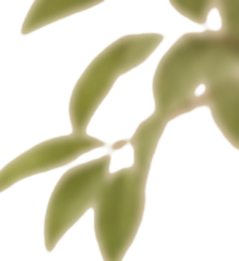

Inspired by Indonesia
Rooted in time-honoured wellness traditions and broader Asian healing practices.

Daily Ritual
A daily wellness drink inspired by Indonesia's jamu tradition, reimagined for modern life.
Be the first to hear about our launch, exclusive updates and a complimentary sample opportunity.
A daily moment of nourishment, hydration and vitality, rooted in Indonesian botanical traditions and designed for modern life.
Rooted in time-honoured wellness traditions and broader Asian healing practices.
With a blend of key electrolytes to help you stay refreshed and replenished.
B vitamins to support natural energy and reduce tiredness and fatigue.
Jamu is an Indonesian wellness tradition using natural plants, roots and spices, developed over centuries to support everyday wellbeing.
More than just a drink, jamu reflects a holistic approach to health — simple, natural and woven into daily life.
Our Daily Ritual is inspired by the traditional Kunyit Kencur recipe — a time-honoured blend of turmeric (kunyit) and aromatic ginger (kencur) — now enhanced with key nutrients to support hydration, energy and everyday wellbeing.
A traditional Indonesian blend of turmeric (kunyit) and aromatic ginger (kencur), valued for generations in jamu practices.
A balanced blend of essential electrolytes to support daily hydration and help you feel refreshed.
Essential nutrients that support natural energy and reduce tiredness and fatigue.
A powerful antioxidant that supports normal immune function and overall wellbeing.
A collection of daily rituals for different seasons of womanhood — thoughtful, effective and rooted in holistic Asian wellness traditions.
Daily support for radiant skin and overall vitality.
Nourishment for hormonal balance and a smoother transition into midlife.
Everyday vitality and hydration.
Be the first to hear about our launch and a complimentary sample opportunity.
No purchase required.